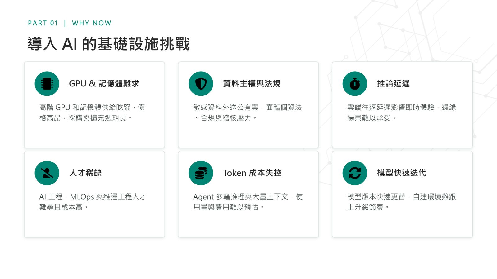
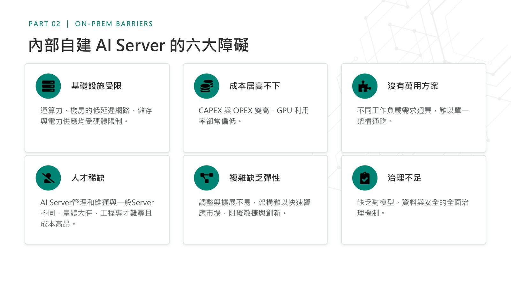
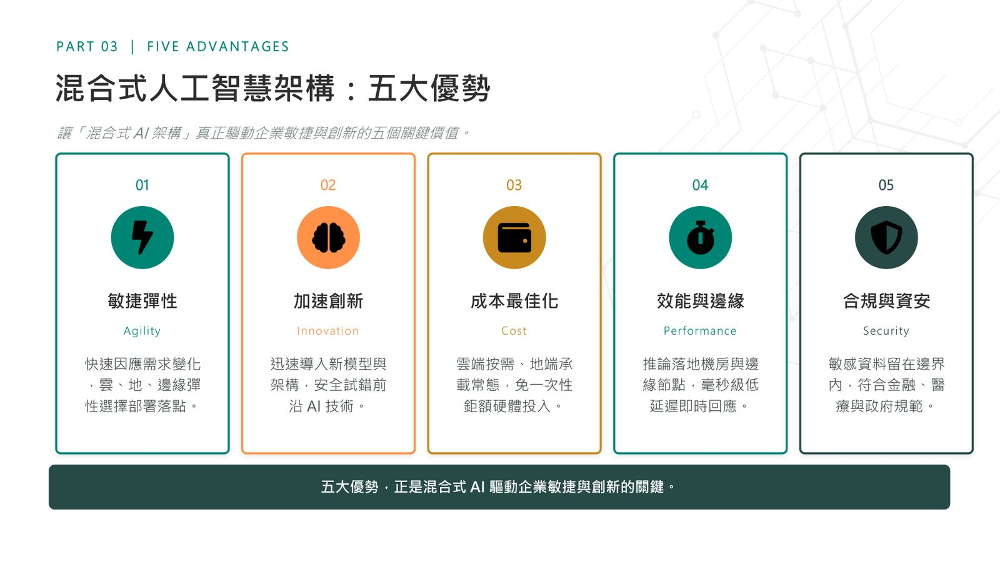
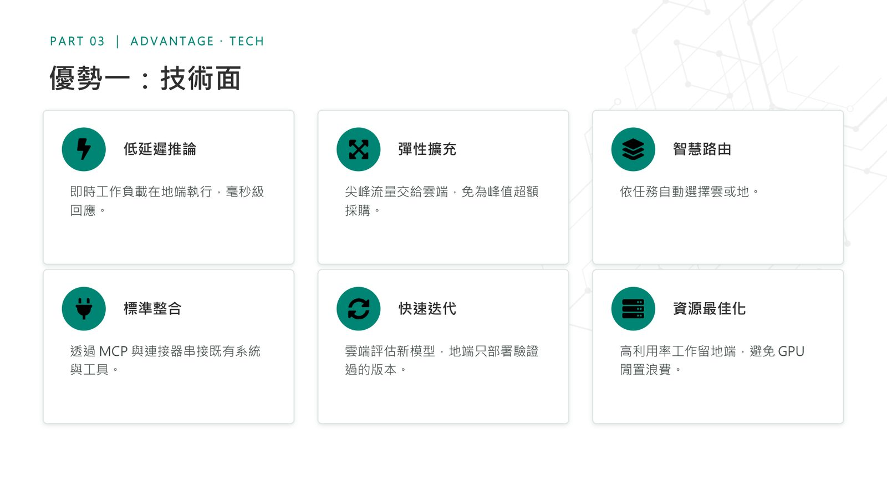

摘要
講者主張企業導入 AI 不是「全雲端」或「全自建」的單選題，而是一道光譜，應該讓對的工作在對的地方執行。講題從導入 AI 的基礎設施挑戰出發，比較全雲端與全自建兩種迷思的優缺點，並提出混合式 AI 架構的五大優勢，介紹以 Microsoft Foundry 與 Foundry Local 為核心的雲地協同架構，最後探討 Token 成本治理與 Responsible AI 的重要性。
重點整理
- 全自建 AI Server 面臨 GPU 供給吃緊、僅約 7% 工作負載能讓 GPU 利用率達 85% 以上等高成本低效問題；全雲端則有長期 OPEX 累積與資料外流疑慮
- 混合式 AI 架構五大優勢：敏捷彈性、加速創新、成本最佳化、效能與邊緣低延遲、合規與資安
- 核心理念是雲端負責訓練與高負載（大規模訓練、突發流量、快速試錯），地端負責敏感與即時（本地推論、毫秒級回應、法規邊界）
- Agent 是「記憶體殺手」，多輪推理與工具呼叫使 Token 成本成為企業導入 AI 的最大挑戰，Gartner 預測 2028 年 AI 程式碼開發成本恐超過開發者平均年薪
- 以 Microsoft Foundry（雲端控制平面）與 Foundry Local（地端/邊緣執行平面）打造同一套控制平面跨雲到邊緣統一治理，敏感資料僅透過 AI-tunnel/MCP 回傳結構化摘要
重點圖片／架構圖




導入 AI 的基礎設施挑戰與企業複雜情境
講者指出企業導入 AI 面臨六大基礎設施挑戰：高階 GPU 與記憶體供給吃緊、資料主權與法規壓力、推論延遲、人才稀缺、Token 成本失控，以及模型快速迭代難以跟上升級節奏。相較個人開發環境，企業情境更複雜，需同時面對多環境並存（開發/測試/正式/災備）、多營運據點、多資料來源（ERP/CRM/MES/PLM）、多資料敏感度分級、多法規要求與多成本效益權衡等因素。
全雲端與全自建的兩種迷思
講題比較「全部上雲」與「全部自建」兩種常見迷思：全雲端方案彈性高、免自建機房，但長期 OPEX 持續累積、有敏感資料外流疑慮與跨網延遲問題；全自建方案資料完全自主、成本可預測、符合資料主權需求，但面臨高額 CAPEX 與折舊、人才與維運門檻高、GPU 利用率常偏低等六大障礙，包括基礎設施受限、成本居高不下、沒有萬用方案、人才稀缺、複雜缺乏彈性與治理不足。講者強調僅約 7% 的工作負載能讓 GPU 利用率達 85% 以上，呼籲企業應先算清楚 TCO 再決定部署策略，AI 部署本質上是一道光譜，而非二選一。
混合式 AI 架構的五大優勢與核心理念
講者提出混合式 AI 架構驅動企業敏捷與創新的五大優勢：敏捷彈性（雲、地、邊緣彈性選擇部署落點）、加速創新（安全試錯前沿 AI 技術）、成本最佳化（雲端按需、地端承載常態）、效能與邊緣（毫秒級低延遲）、合規與資安（敏感資料留在邊界內）。核心理念是讓對的工作在對的地方：雲端負責大規模訓練、微調、突發流量與快速試錯；地端則負責敏感資料的本地推論、毫秒級即時回應、斷網仍需運作的場景，兩者互補而非對立。
Token 經濟學與治理之道
講者特別點出 Agent 是「記憶體殺手」：LLM 本質無狀態，每次推論都需重新組裝歷史對話與任務狀態，多輪推理與工具呼叫、多 Agent 與檢索注入都使 Token 消耗快速膨脹，成為企業導入 AI 最大挑戰。引用 Gartner 預測，2028 年 AI 程式碼開發成本恐超過開發者平均年薪，成因是 Token 消耗激增與計價模式轉向用量計價。治理之道包含建立用量可觀測儀表板、依任務分級授權（Developer-led/With-agent/Agent-led）、智慧模型路由（簡單任務交小模型）、情境工程降耗，以及制度化的 Token 門檻與定期檢視機制。
Microsoft Foundry 混合式架構藍圖與 Responsible AI
講者介紹以 Microsoft Foundry（雲端控制平面，含 Models、Agent Service、Foundry Tools、Workflows、Observability）與 Foundry Local（地端/邊緣執行平面，涵蓋 Windows PC、Linux、邊緣裝置等）組成的統一治理架構，透過 AI-tunnel/MCP 僅回傳結構化摘要、敏感資料不外送，實現同一套控制平面跨雲端到邊緣的離線可用、低延遲與零 Token 費用。並以醫療情境為例，展示 Phi-4-mini（地端）與 GPT-4o/GPT-4.1（雲端）協同運作的應用架構。最後強調 Responsible AI 六大原則（公平性、可靠性與安全、隱私與保密、包容性、透明、問責）需搭配 Content Safety、Evaluation、Tracing、Audit Logs 等平台落地能力，指出調查顯示 64% 企業使用或計劃使用雲端部署、35% 探索混合模式、僅 1% 堅持純本地端，混合式已是回應真實需求的務實解方。